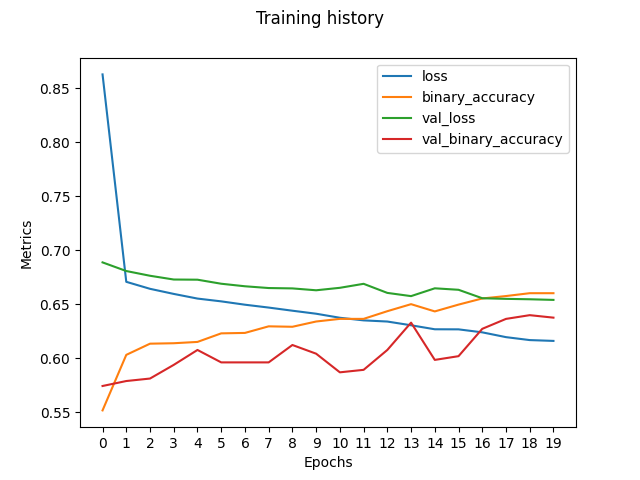
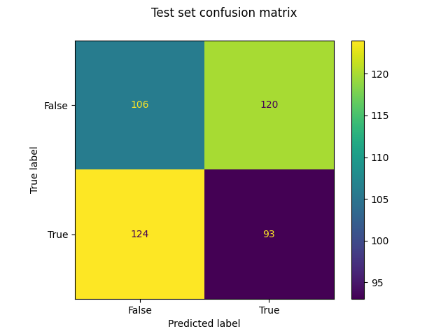

Economic Analysis
Business cycles
The economy is usually expanding, although sometimes recessions come. These are short lasted, but it may take some time for the economy to return to its previous level of activity.
The economy is said to move in cycles of expansion and contraction, these are called business cycles.
The economy expands, until it reaches a peak, then it contracts, in what is usually referred to as a recession, until it reaches the trough of the cycle. During the expansion, consumption, investment, employment and imports rise. When the peak is reached the economy is usually in an overheated state, and inflationary pressures are present. At some point, there will be a move to recession, the contraction part of the cycle. This will be reflected in a cooling economy, production and income will fall, leading to a fall in consumption and investment. Eventually, the trough will be reached, economic activity will be low: low investment, incomes, consumption and there will be deflation.
These moves can be tracked with various economic indicators such as the gross domestic product (GDP), the unemployment rate, the consumer price index, the industrial production, the total non-farm payroll/employees (the farm payroll is not accounted for, because agriculture is somewhat detached from the economy, it is more dependent on meteorological conditions) and the stock market.
The average duration of a business cycle is 5,5 years. But this varies a lot. In average, the period of expansion is 58 months, whereas the recession and trough are 11 months.
Knowing these basic facts about the economy, we can gauge the state of it looking at indicators. When we plot the performance of the S&P 500 we will be tracking it via the SPDR S&P 500 ETF Trust (SPY).
From this plot we can see the correlated moves of the S&P 500, West Texas intermediate crude oil prices (WTI), the volatility index (VIX) and the unemployment rate.
The S&P 500 and WTI move together, and the VIX and unemployment rate move together, opposite to the first two. We can see how the volatility and the unemployment spiked during the great financial crisis of 2008 (GFC) and the COVID-19 pandemic, when the S&P 500 and the WTI fell considerably. Although there is an interesting uptrend in WTI that lasted well into the GFC, peaking in the summer of 2008, just before falling sharply.
This strong uptrend, which was stronger indeed that the trend of the stock market, may be explained by the financialization of the commodity markets that happened in the 2000s (this is when commodities started to become more popular as investment vehicles, mainly via futures). Although opinions on this are diverging.
We can also see how the liquidity pumps performed by the Federal Reserve (such as the cutting of interest rates, and large-scale purchase of debt securities to support the economy) during COVID-19 affected the stock market; it picked on an uptrend and reached all time highs around December 2021.
WTI crude oil did recover as well, but its run was not as extreme. Volatility and unemployment receded as well, although the decrease in unemployment was more gradual. However, volatility settled to a new level, which is 50% higher than before COVID-19. This may be caused by several reasons, such as uncertainty and fear initiated during the pandemic, that still lingers, unstable geopolitical conditions, tight fiscal policy after COVID-19 (interest rate hikes) and the monetary policy carried out during COVID-19.
It has also been shown that the VIX shows “long term memory”. Economic shocks in the past can still be felt after a long time.
Sources:
[1]https://www.nber.org/research/business-cycle-dating
[2] Economics, Alain Anderton, 1993
[3] https://www.nber.org/reporter/2014number2/financialization-commodity-markets
[4] https://www.brookings.edu/articles/fed-response-to-covid19/
[5] https://www.sciencedirect.com/science/article/pii/S1544612321001379
The VIX
The Chicago Board of Exchange (CBOE) volatility index, known as the VIX among friends, is a measure of the volatility of the S&P 500 index in the next 30 days, i.e. the fluctuations in price. It is a leading indicator, reflecting investor sentiment; indeed it is often referred to as the “fear index”, because it affects investors’ actions in the market: if volatility is high, investors will be more cautious and vice versa. The VIX is calculated in real time by the CBOE comparing strike prices of standard S&P 500 options (expiring on the third Friday of each month) and weekly options (expiring on all other Fridays).
The VIX can even be traded through derivative products, like options and futures. It is a good tool for portfolio diversification and hedging, because it is known to have a strong negative correlation with the S&P 500. So, when the markets are down, the VIX is up.
Sources:
[1] https://www.investopedia.com/news/what-does-volatility-index-vix-indicate/
[2] https://www.sfu.ca/~poitras/419_VIX.pdf
[3] Chicago Board Options Exchange, CBOE Volatility Index: VIX [VIXCLS], retrieved from FRED, Federal Reserve Bank of St. Louis; https://fred.stlouisfed.org/series/VIXCLS, October 27, 2023.
Bond Yields and Spreads
Bond yields as well as bond prices are a very important economic indicator used to monitor interest rates, which will have an impact on the whole economy. They help to make decisions regarding stock choices and mortgages.
It is known that usually bond yields have an inverse correlation to bond prices. This is because the bonds’ coupon payments, based on the interest rates at the time of purchase, are fixed, therefore if the interest rates rise, the older bonds will become less attractive with their lower coupon payments, this will cause the price of the older bond to fall to bring it to line with the new higher rates. There will be less demand for the lower interest rate bonds.
During periods of economic expansion bond prices usually fall, this is because interest rates go up, and because the rallying stock market will lure more investors expecting better returns than from the bond market. The stock market and the bond market end up competing for capital.
However, right after a recession, when inflationary pressures and interest rates are low, bonds and stocks are more prone to move together.
Bond yields are low when interest rates are low, this is a time when the economy can easily grow, it is a benign environment to borrow and build businesses.
How do bond prices and bond yields behave during times of economic stress such as the GFC and COVID-19?
But what about bond yields and credit spreads. How are these moving?
Let’s look at plot of bond yields and credit spreads over the last twenty years. We can see that they are diverging. Maybe they have a negative correlation. We are looking at the Bank of America Merrill Lynch US High Yield Master II Index, which measures the yield spread over U.S. Treasury bonds and is focused specifically on high-yield bonds. We will compare this with the US 10-year treasury bond yields.
We also plot the yield and the spread together; we can see that the moves are often opposed. We notice that the highest peak in the credit spread is reached during the GFC, as well as in 2020, during COVID-19. In July of 2023 the spread curve crossed under the yield curve, and now they seem to be rising at a similar pace.
This has to do with the rising interest rates, which increase corporate and real estate capital costs and reduce consumer spending, and also reduce corporate profitability. This may have an impact on the stock market, because the worsening of the economic conditions and the rise of the yield curve will have the effect of more investors leaving the stock market to move to safer, and now more profitable (than before) bonds.
Indeed, from plotting these three together, we see that the SPY and the credit spread are negatively correlated.
Let’s also look at Treasury bond yields as a leading indicator. Let’s plot the spread between 10-Year Treasury bond yields and 2-year T-bond yields together with the total number of non-farm employees, which is a good proxy for gauging the health of the economy.
The yield spread curve and the employment curve have a negative correlation. We can also see that positive changes in the slope of the yield spread curve starting in August 2001 seem to predict a positive change in employment starting in December 2002 (actually January 2002, but this is not visible in our data set), the GFC and COVID-19, that is, the red curve seems a to be a leading indicator of economic growth. Of course, this is not enough evidence to draw any intricate conclusions, but it is an interesting observation that makes sense in a broader economic context.
During COVID-19, there was a positive reversal of the yield spread curve, and right after it, the economy experienced massive growth, that lasted until September of 2021.
It is interesting to note that in April 2021 the yield curve slope experienced a negative reversal. So only five months later, the economy commenced to decline. We can also see that in August 2021 the yield spread curve slope changed to the positive again, and in March 2022 the employment curve reversed.
In October 2021, there was another reversal of the yield spread curve slope to the negative and, ignoring a couple of bumps, it has been following that downtrend until March 2023. We can see this reversal reflected in the employment curve in July 2023, where it seems to have reversed, or at least settled for some time.
In July 2023, there was also a clear positive reversal of the yield spread, which continues to the present day, so according to this, it is likely that the US economy will enter soon a period of growth again.
Sources:
[1] https://www.investopedia.com/ask/answers/061715/how-can-bond-yield-influence-stock-market.asp
[2] https://www.finra.org/investors/investing/investment-products/bonds#buying-and-selling
[3] https://www.aqr.com/research-archive/research/white-papers/what-drives-bond-yields
[4] https://www.investopedia.com/articles/bonds/07/price_yield.asp
[5] https://apolloacademy.com/credit-spreads-are-disconnected-from-credit-yields/
[6] https://www.stlouisfed.org/on-the-economy/2021/november/comovement-credit-spreads-debt-assets-crises
[7] https://www.stlouisfed.org/on-the-economy/2021/april/yield-curve-predictor-future-growth
All Market Indices and Leading and Lagging Indicators
Most market indices are quite correlated, they follow the same trends, which are summarized by the S&P 500, which we are looking via the SPY. Although we do notice that some market indices, like for example the consumer staple index, are fairly constant. We also notice that the composite leading indicators (LEI) are not quite so leading compared to the stock market, which does make sense, since the stock market itself is a leading indicator, and is very fast in reacting to global macroeconomic conditions. The composite lagging indicators (LAG), seem to be negatively correlated with the leading indicators, which is slightly strange.
Correlation Gives You Important Insights About the Market
Correlation is a statistical measure that describes how two assets are related. It can give perspective on the overall nature of the market. We use Pearson correlation. The scale varies between -1 and +1.
Correlation of -1 indicates a perfectly linear negative correlation and +1 indicates a perfectly linear positive correlation.
Correlation of 0 indicates that there is no linear dependency between the two assets.
So the higher the positive correlation, the more strongly the two assets vary together, and the higher the negative correlation, the more strongly they vary together but in opposite directions.
But what concrete information do correlations give you?
You might want to recognise which assets are correlated and uncorrelated with each other to assess the unsystematic risk in your portfolio.
You can identify whether you have multiple assets that behave in the same way, thereby increasing your risk.
You can also identify assets that show very little correlation with the assets currently in your portfolio and explore them as potential diversification opportunities.
By looking at the correlation over time, you get information about the relationship between two assets over different economic periods.
The interactive charts below allows you to examine the rolling 1-month correlation between the S&P 500 and the Energy sector, i.e. XLE, and between the S&P 500 and the Crude Oil Prices, i.e DCOILWTICO.
By looking at the network of correlations, you can find out how all assets behave in relation to each other. This kind of network can be formed for certain periods of time.
Below you can explore interactive network graphs, the first of which shows the 2007-2009 financial crisis and the second the 2020-2023 Covid-19 pandemic.
From them you can easily find out:
Which assets show the strongest and weakest correlations with each other?
Annualised returns (Node sizes are proportional to the size of annualised returns and colours denote positive or negative returns).
Annualised volatility.
Predicting Stock Market Moves
The aspiration of using machine learning to predict the stock market’s profitability may sound like the quest for a financial Holy Grail. However, it’s a question that has intrigued investors and data scientists alike: “Can you become a billionaire with ML?” The goal here is to harness the power of machine learning to predict whether the stock market will be profitable in a certain number of future periods, and the “certain number” is something we can tune according to our preferences. This is achieved through a binary classification approach, where for each trading day, the model attempts to predict whether the price at a specified future time will be higher than the current price (1) or not (0). For our analysis we focused mostly on the prediction of the S&P 500 (ticker: SPY), the index that comprises the major US stocks weighted by capitalization.
Data Augmentation and preparation
The success of a machine learning model depends on the quality and quantity of data. We make use of a dataset that encompasses 9 out of the 11 major market sector indices, along with other key US macroeconomic data. To enhance the dataset’s information content and provide our algorithms with a richer context, we employ data augmentation. Beforetraining our algorithms, we apply several transformations to the dataset. One of these enhancements involves calculating the relative strength between different market indices. This provides a deeper understanding of the interplay between various sectors within the stock market. We also compute various Simple Moving Averages (SMA) at different timeframes, including 20, 50, and 200 periods. These SMA values offer insights into the trend and momentum of stock prices, which are crucial factors in stock market predictions.
Furthermore, we incorporate calculations of relative returns, which give us an idea of how individual assets or sectors are performing concerning broader market movements. All these augmented features aim to better capture the underlying patterns and relationships within the stock market.
Two additional steps can be performed on the enriched data, optionally: re-sampling to a different frequency (e.g. monthly or weekly periods), and standardization, in which the data is normalized to have 0 mean and unit variance, which should have a regularizing effect on training.
Finally, the dataset is split in two sets: one for training, that goes from the beginning of out collected historical data (from 1998) until the end of 2021; and another for testing, which cover the recent history from 2022 until today.
Metrics
To test our models and compare them together, we calculate the following metrics for predictions computed on both the train and test set
Accuracy: Accuracy is a widely-used metric that measures the overall correctness of a model’s predictions. It is calculated as the ratio of all correct predictions (true positives and true negatives) to the total number of predictions. The formula for accuracy is:
\[\text{Accuracy} = \frac{\text{True Positives} + \text{True Negative}}{\text{Total Predictions}}\]
Accuracy provides a general sense of how well the model performs across all classes. In stock market prediction, a high accuracy indicates that the model is making correct predictions for both positive and negative returns, but it may not reveal how well it’s doing with respect to profitable trades specifically.
Precision: Precision measures the accuracy of the positive predictions made by a model. It is calculated as the ratio of true positive predictions (correctly predicted positive cases) to the total number of positive predictions (true positives plus false positives). The formula for precision is:
\[\text{Precision} = \frac{\text{True Positives}}{\text{True Positives} + \text{False Positives}}\]
A high precision indicates that when the model predicts a positive outcome, it is more likely to be correct. In the context of stock market prediction, high precision means that when the model suggests a profitable trade, it is likely to be accurate, reducing the risk of making erroneous investment decisions.
Recall: It answers the question: “Out of all the actual positive instances, how many did the model correctly identify?” and is calculated as:
\[\text{Recall} = \frac{\text{True Positives}}{\text{True Positives} + \text{False Positives}}\]
A higher recall value indicates that the model is better at capturing positive instances, for example, in the context of stock market prediction, a high recall means that the model is effectively identifying days when the market will yield a profit, reducing the likelihood of missed opportunities for profitable trading.
F1 Score: The F1 score is a balance between precision and recall and is particularly useful when the dataset is imbalanced. It is calculated as the harmonic mean of precision and recall and provides a single metric that considers both false positives and false negatives. The formula for the F1 score is:
\[\text{F1 Score} = \frac{2 \cdot \text{Precision} \cdot \text{Recall}}{\text{Precision} + \text{Recall}}\]
A high F1 score indicates that the model achieves both high precision and high recall, striking a balance between avoiding false positives and correctly identifying positive cases. In stock market prediction, a high F1 score suggests that the model is effective at making accurate predictions of profitable trades while minimizing false positives and false negatives.
Model Performance
XGBoost
XGBoost, which stands for eXtreme Gradient Boosting, is a powerful machine learning algorithm that builds an ensemble of decision trees to make predictions. It operates by building an ensemble of decision trees, where each tree corrects the errors of the previous one. It starts with a simple initial model and iteratively improves its predictions by adding new trees. During training, XGBoost uses a combination of regularization techniques to prevent overfitting and to ensure that the model generalizes well to unseen data.
Convergence plots show that as the model iteratively learns from the data, the errors decrease, and the AUC (Area under the curve) increases, indicating the model’s improving performance over time.
On the training set, the confusion matrix indicates a slight bias towards false negatives. This means that the model might be missing some profitable opportunities, but it maintains a high level of accuracy. With an accuracy of approximately 82%, the model outperforms a simple dummy model, achieving an F1 score of around 0.86. The recall, measuring the model’s ability to identify positive returns, is approximately 0.90, while precision, gauging its accuracy in predicting positive returns, stands at around 0.83.
| Dataset | Dummy Accuracy | Accuracy | F1 Score | Recall | Precision |
|---|---|---|---|---|---|
| Train | 0.61 | 0.82 | 0.86 | 0.89 | 0.82 |
| Test | 0.47 | 0.46 | 0.63 | 0.97 | 0.47 |
On the test set, a similar trend is observed, with a slight bias towards false negatives. The accuracy on the test set is around 46%, which is disappointingly comparable with the dummy model. This suggests that the model is failing to generalize, and any prediction is not better than a random guess.
MLP
The Multilayer Perceptron (MLP) is a type of artificial neural network designed to mimic the functioning of the human brain. It consists of multiple layers of interconnected nodes, each of which performs specific calculations. In the context of stock market prediction, an MLP receives historical data as input, like stock prices and market indicators. These data points are passed through the input layer and then into hidden layers, which transform and process the information. The crucial feature of MLP is its ability to learn intricate, non-linear patterns within the data. This is achieved through a process known as backpropagation, where the model adjusts its internal parameters (weights and biases) during training to minimize prediction errors. The network’s final layer produces an output, such as a binary classification of whether the market will yield a profit or not.
On the training set, the confusion matrix shows a balanced distribution of false positives and false negatives. This suggests that the model is achieving a compromise between correctly identifying positive and negative returns. The accuracy on the training set is approximately 73%, which is better than a simple dummy model. The F1 score is about 0.80, indicating a balance between precision and recall. The recall, measuring the model’s ability to identify positive returns, is approximately 0.86, while precision, measuring the accuracy of positive predictions, stands at around 0.74.
| Dataset | Dummy Accuracy | Accuracy | F1 Score | Recall | Precision |
|---|---|---|---|---|---|
| Train | 0.61 | 0.73 | 0.79 | 0.85 | 0.74 |
| Test | 0.47 | 0.47 | 0.41 | 0.37 | 0.46 |
Unfortunately, the result on the test set is similar to the one produced by XGBoost. No better than a random guess.
LSTM/GRU:
Long Short-Term Memory (LSTM) and Gated Recurrent Unit (GRU) are specialized variants of recurrent neural networks (RNNs) designed to handle sequential data, making them particularly effective for tasks like stock market prediction. These models address one of the main challenges in traditional RNNs, which is the vanishing gradient problem that limits their ability to capture long-range dependencies in sequential data. LSTMs and GRUs overcome this limitation through the use of gating mechanisms, which allow them to selectively retain and update information over time. LSTMs employ a more complex structure with three gates: input, forget, and output gates, and a cell state that enables the model to remember or forget information at various time steps. On the other hand, GRUs are computationally more efficient, utilizing just two gates: reset and update gates.

The history shows how the loss decreases with the number of epochs, and other metrics like accuracy increase. slightly with each itetration. This is a signal that the model converges, even though at slow pace.

On the training set, the confusion matrix indicates a heavy bias towards false negatives. This means that the model is more prone to missing profitable opportunities, resulting in a higher recall at the expense of precision. The binary accuracy on the training set is approximately 64%, indicating that the model outperforms a simple dummy model, even if slightly. The F1 score is about 0.73.
| Dataset | Dummy Accuracy | Accuracy | F1 Score | Recall | Precision |
|---|---|---|---|---|---|
| Train | 0.61 | 0.64 | 0.73 | 0.82 | 0.66 |
| Test | 0.47 | 0.44 | 0.43 | 0.43 | 0.42 |
Again, the binary accuracy on the test set is approximately 44%, which is not significantly better than random guessing.
Overall results
Across all three machine learning algorithms we applied, we observed a consistent trend.
The accuracy on the test set was generally quite high, indicating that our models were proficient at making predictions based on the training data. However, there was a catch – a rather significant one. All the algorithms displayed a tendency to overfit the data. In practical terms, this means that when we applied these models to predict on the test dataset, their accuracy wasn’t substantially better than what we could achieve with a simple, naive model that doesn’t consider the complexities of the stock market (basically, no better than a random guess).
This overfitting issue raises concerns about the robustness and real-world applicability of our models. While they seem to master the training data, they struggle to generalize their predictions beyond that, which is a common pitfall in machine learning. It emphasizes the importance of being cautious when interpreting the accuracy metrics alone. Successful application in the financial world necessitates not just high accuracy during training but the ability to adapt to unforeseen market dynamics and make profitable decisions. It’s a reminder that stock market prediction, even with the aid of ML, remains a complex and challenging endeavor. So, for now, we discourage the ML practitioners to take that multimillion loan for purchasing a Lamborghini.
So… Is it over?
No! There are many things that can be done to improve the models. We believe that the features in our dataset confused the models, because they are heavily correlated. So the first thing to try would be to change the type of augmentation and features included in the training dataset. A good strategy would be to train several models with different sets of features, and then merge the features that yield to an improved accuracy. Another low-hanging possible improvement is increasing the number of epochs (for the deep learning models based on backpropagation), or number of iterations, plus doing more hyperparameter tuning. There is evidence in the literature1 that Deep Learning models can be used to get a small probabilistic advantage at predicting profit opportunitues, that are significantly better than random choice, even if the margin is just of a mere 54% accuracy on unseen data2.
Footnotes
Mahinda Mailagaha Kumbure, Christoph Lohrmann, Pasi Luukka, Jari Porras, Machine learning techniques and data for stock market forecasting: A literature review, https://doi.org/10.1016/j.eswa.2022.116659↩︎
S. Kim, S. Ku, W. Chang and J. W. Song, “Predicting the Direction of US Stock Prices Using Effective Transfer Entropy and Machine Learning Techniques” https://ieeexplore.ieee.org/document/9119388↩︎